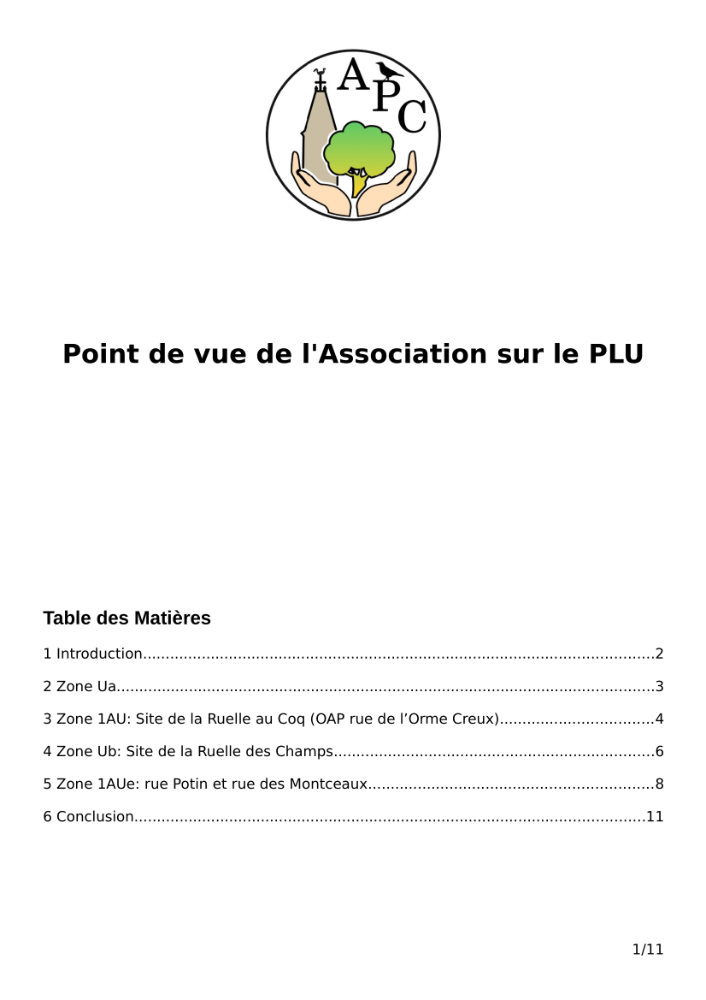

Point de vue de l'Association sur le P.L.U.

Opinion de l'association sur le P.L.U.
Voici notre point de vue sur le Plan Local d'Urbanisme de Corbreuse (2019/20).
27 Janvier 2020 - Mise à jour
Nos remarques sur le PLU déposées dans le cahier du commissaire enquêteur à la Mairie au nom de l’association Préservons Corbreuse.